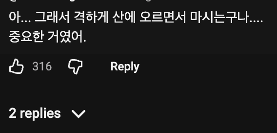
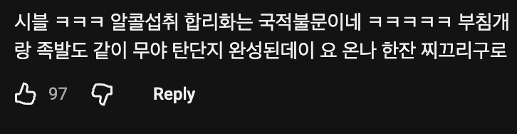
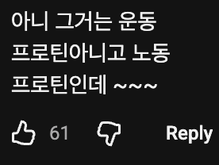
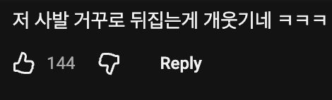
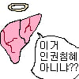

운동끝나고달래주시며 따라주신 막걸리한잔~
마지막 씹 ㅋㅋㅋㅋㅋ
크아아아아~~뻑 예
어쩐지 등산하고 다들 먹더라
그냥 한국인인데? ㅋㅋㅋ
간 십창나는거 아니냐 ㅋㅋ
십ㅋㅋ 간은 부담 더블이잖아

그 설탕을 일부로 안넣기는 한데 ㅋㅋㅋㅋ
수육에 막걸리면 권장섭취량 넘기지ㅋㅋㅋ
시발 ㅋㅋㅋㅋㅋㅋㅋㅋㅋㅋㅋㅋㅋㅋㅋㅋㅋㅋㅋㅋㅋㅋ 한국여행 여러번 가본 사람 같은데 100% 한국인 친구 3명 이상은 있음
반박불가ㅋㅋ
모내기하면 새참을 주는 이유제ㅋㅋㅋ